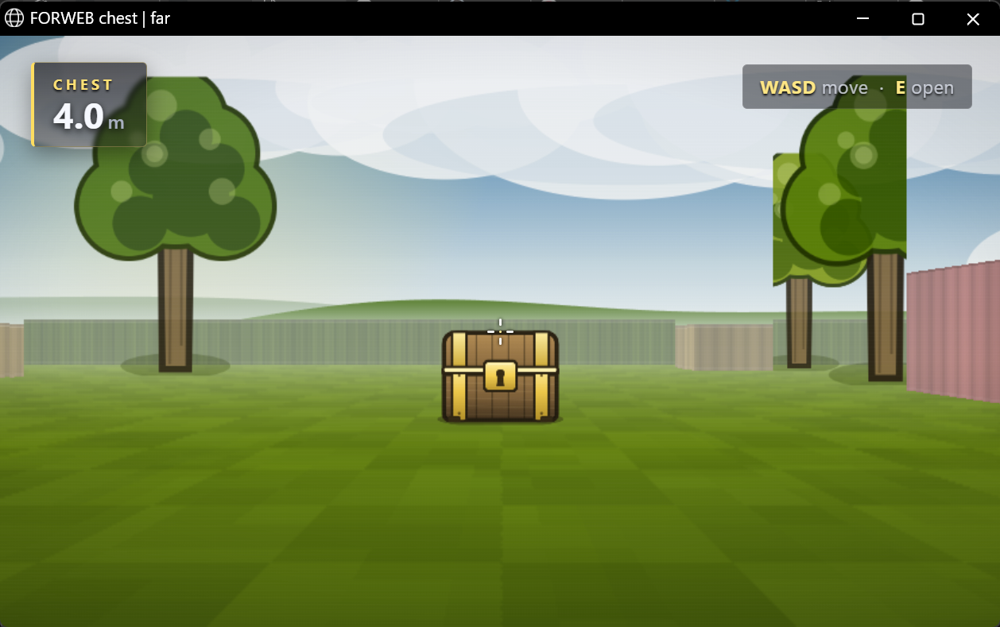
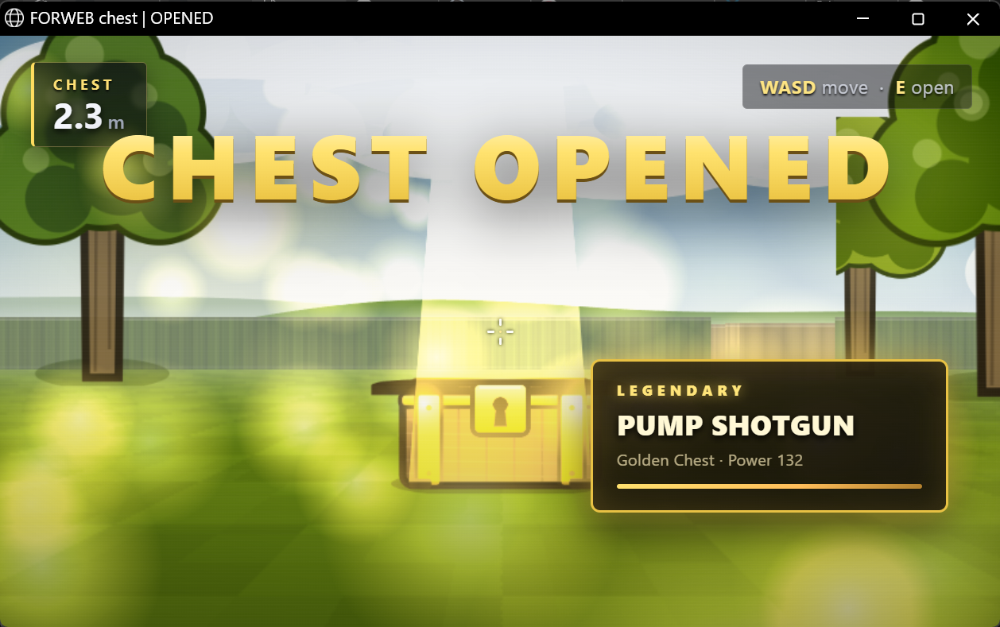
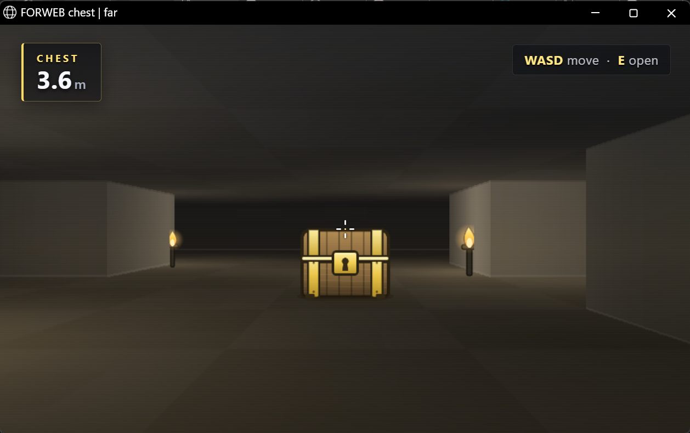

A vision model looks at a 3D game, decides what to do, and the code presses the keys.
The chest in front of you is opened by Jev 1.14 choosing interact —
not by a scripted click. Walk it, watch the HUD, then read how the loop was measured.
A small Fortnite-style first-person scene whose only job is to make a model's decision
observable. The page publishes its state in the window title:
far, IN RANGE (E), OPENED. The test harness
screenshots the real browser window, asks the model, injects the keys with
SendInput, and reads the title back. Nothing but a genuine E
that landed on the page can flip that title.

FORWEB chest | far. The model has to
decide to walk, not to press E.
interact: lid open, light beam, loot card,
and the title is now OPENED.capture window ──▶ Jev (State / Questions) ──▶ plan ──▶ SendInput ──▶ read title
▲ │
└──────────────────────── next decision ◀───────────────────────────┘
The model answers typed questions, not free-form JSON: action (move, strafe,
jump, interact, attack, aim, reload, look), hold (0.12 / 0.35 / 0.8 / 1.6 s),
repeat (1–3), plus a Box for the target and a path
judgement (clear / low / high wall / hazard). The code maps those choices to exact keys —
the model decides what, the code owns how.
| Task | Scene | Driver | What it proves | Result |
|---|---|---|---|---|
| keyboard_fortnite | outdoor | scripted W + E | the page and the key path work at all | PASS |
| keyboard_dungeon | dungeon | scripted W + E | the second scene is wired the same way | PASS |
| negative_fortnite | outdoor | E at 4 m | the game refuses an out-of-range action | PASS |
| idempotent_fortnite | outdoor | E twice | an opened chest stays opened | PASS |
| vision_fortnite | outdoor | Jev | the model walks, then chooses interact | PASS · 3 steps |
| vision_dungeon | dungeon | Jev | the same policy transfers to a new look | PASS |

The first version felt unplayable because every decision paid for a new TLS handshake and uploaded a 1280 px PNG. A/B on the same frame, same model, median of four calls:
| Configuration | Median | Why |
|---|---|---|
| 1280 px + fresh connection | 5734 ms | DNS + TCP + TLS on every call |
| 1280 px + reused socket | 3094 ms | handshake paid once |
| 960 px + reused socket | 2992 ms | upload shrinks, not enough |
| 768 px + reused socket | 1954 ms | upload halved, the knee of the curve |
Three changes: a persistent HTTPConnection with proxy tunnelling and
one-shot reconnect, capture at 768 px, and a 12-question profile that drops the fields the
planner never reads (output tokens 708 → 525).
A single move_relative(320) whips the camera in one frame. The turn is now
split into 20 ms ticks with a smoothstep speed curve: 320 px becomes 20 events over 400 ms,
largest tick 26 px, total displacement exact.
Two slow sinusoids (drift), a per-tick jitter (tremor) and an occasional tiny flick (saccade) are added through the same mouse path. Saccade signs alternate, so a long session never slowly rotates away from the target.
turn +320px old : 1 mouse event, +320px, ~0 ms (camera whip) new : 20 events, 400 ms, max 26px/tick sum : 320px (exact), ease-in/out via smoothstep noise: drift ±5px · tremor 0.8px/tick · saccade 7px every 2.5–7s
Movement is held between decisions instead of released every step, hold durations are jittered ±8–12 %, and if an E changes nothing on screen the next plan walks forward instead of pressing again.
Mouse sensitivity differs per game and can change mid-session, so nothing is measured or assumed. Every decision Jev re-reads the target box, and the code takes a bounded fraction of the remaining offset — the gain, not a constant in degrees. If the last turn helped, the gain creeps up; if it did not, the gain is cut. A wrong gain costs one frame of convergence, never the target.
target +0.30 ──turn 200px──▶ target +0.05 gain 0.60 → 0.66 target +0.32 ──turn 260px──▶ target +0.41 gain 0.66 → 0.36 (overshoot: back off)
Movement is the same story: approach speed is unknown, so the loop walks, looks, and presses E; if the press changed nothing on screen it walks further. A sprint and a crawl both converge without a constant.
The first version stopped, turned, then walked — two separate beats, which reads as a machine. The movement keys now go down before the camera swing, so the character is already moving while the view eases toward the target. Interact, jump and clicks keep the strict order because they need a stable base.
bot/
afk/
jev.py System One client: keep-alive socket, timings, box validation
explore.py model choice -> concrete keys (action / hold / repeat / path)
motion.py eased turning, hand tremor, jitter
autotune.py sensitivity probe from frame correlation
controller.py lobby -> queue -> match -> leave state machine
win32.py window capture, SendInput / PostMessage
tools/
web_task_suite.py the six tasks above
bench_jev.py latency A/B
tune_game.py sensitivity measurement
turn_demo.py turn profile chart
tests/ 84 unittest cases, stdlib only
ctypes for GDI capture and input,
urllib for the API, zlib for PNG. No pip install, no SDK.